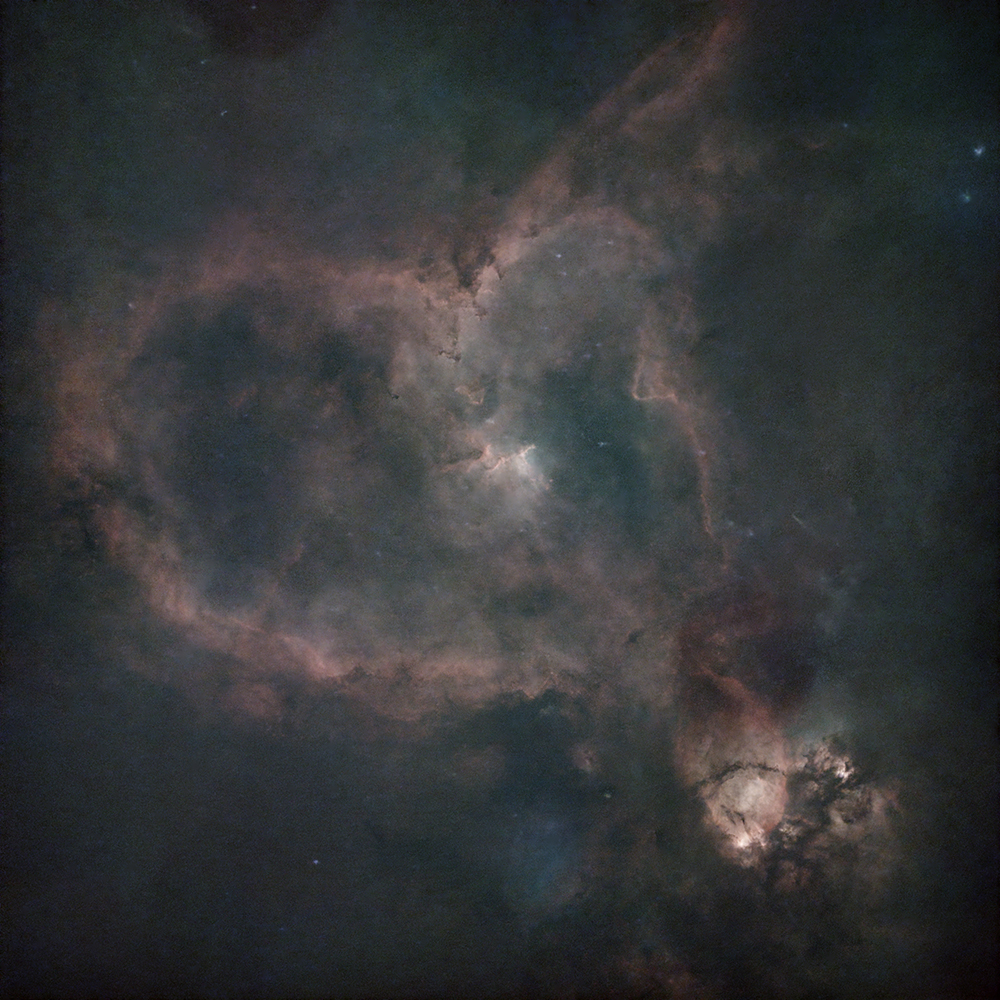
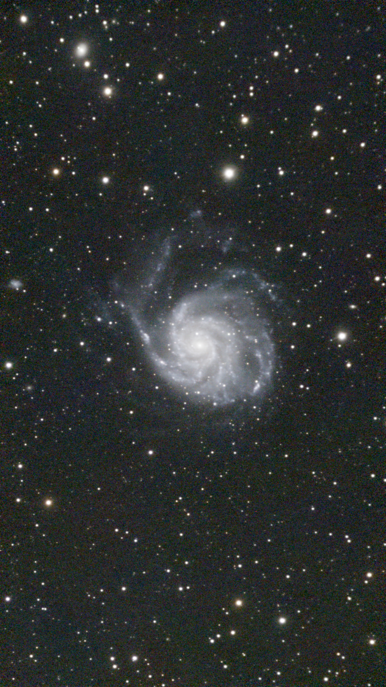
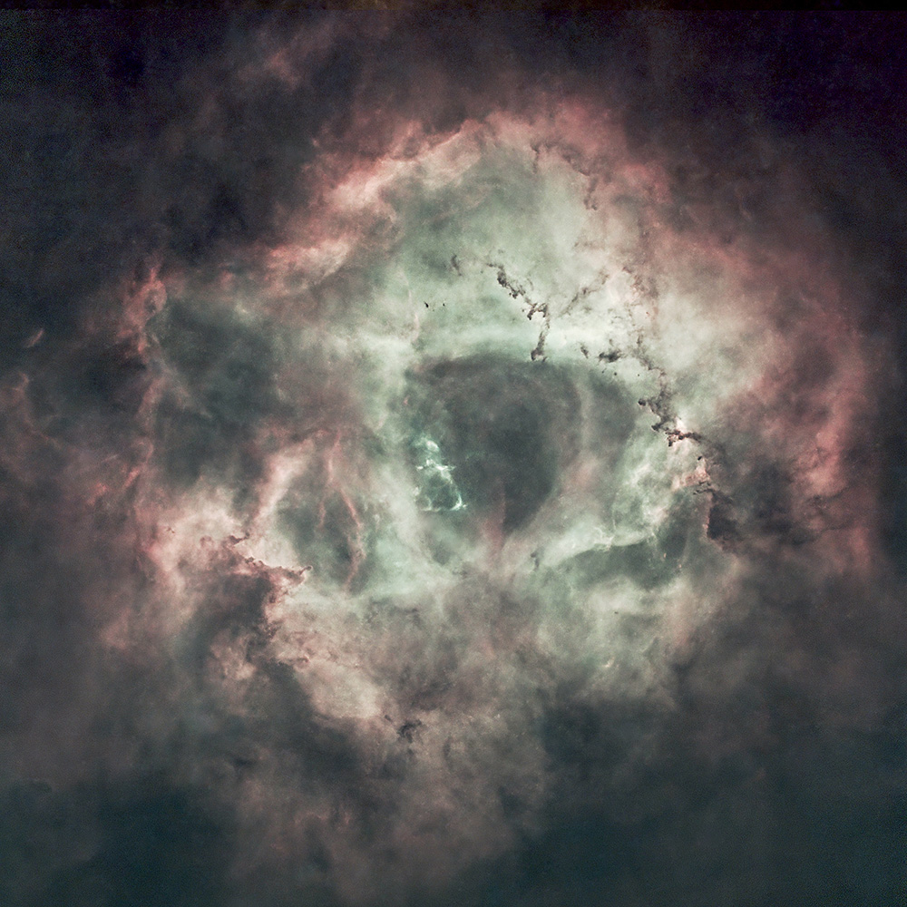
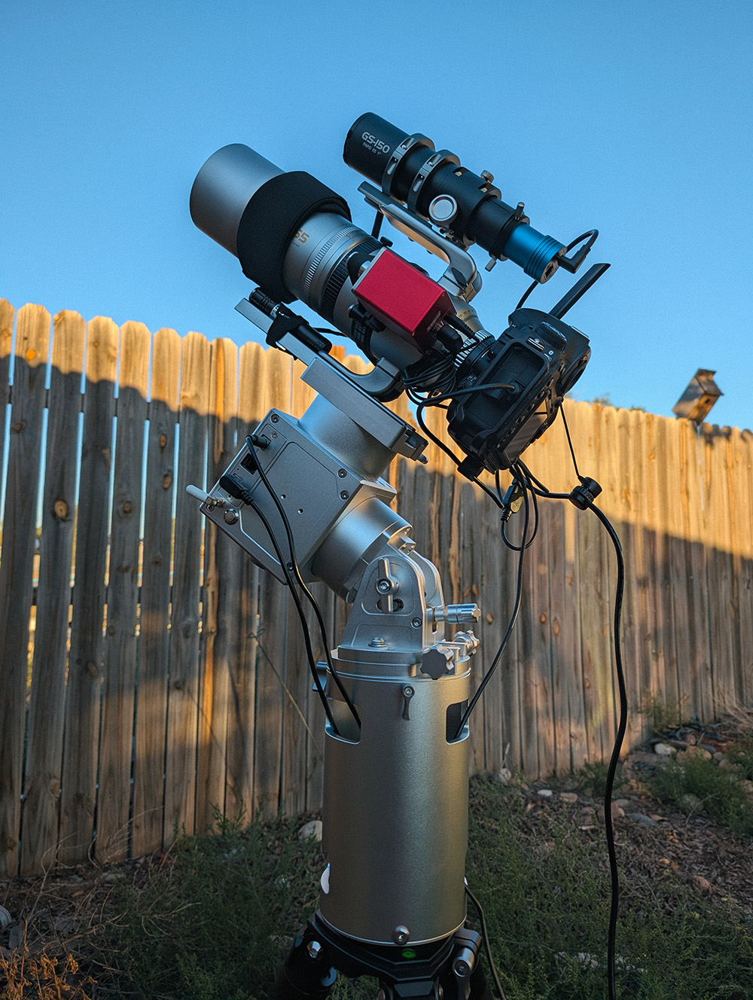

Astrophotography Equipment
| Category | Equipment | Primary Use |
|---|---|---|
| Camera Body | Nikon D850 Astromodified | High-resolution photography |
| Camera Body | Player One Ares-C Pro | Cooled Astrophotography Camera |
| Telescope | Askar SQA55 | 55mm 265mm focal length |
| Telescope | Meade SN 6 | 6" Schmidt-Cassegrain 762mm focal length |
| Smart Telescope | Dwarflab Dwarf 3 | High resolution smart telescope 150mm focal length |
| Smart Telescope | ZWO Seestar S50 | High resolution smart telescope 250mm focal length |
| Telescope Mount | MLAstro SAL-33 X2 | Strainwave precision mount for astrophotography |
| Telescope Mount | Star Adventurer GTI | Heavy-weight star tracker for astrophotography |
| Telescope Mount | Star Adventurer 2i Pro | Light-weight star tracker for astrophotography |
| Camera Lens | Samyang 135mm f/2 ED | Fast and well corrected lens for widefield astrophotography |
| Tripod | Innorel RT90C X2 | Heavy-duty carbon fiber tripod |